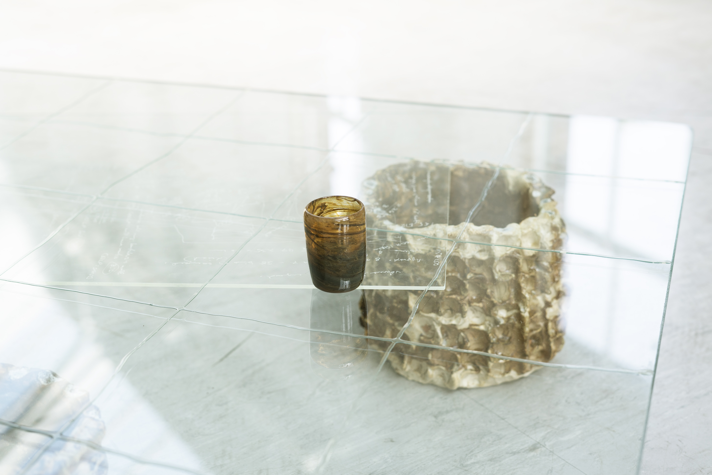

fionn duffy
info
引き継ぐ: nets, eddies and cadences of habit
this smooth weight holds and gluts / tha an cudthrom caoin-sa a glèidheadh 'sa slugadh
(Act 3: Clay) with Kawther Luay
I can see your bones but I don't know how to read them
a mineral dance:
or how to become glass
the story of white's whistlers
a three-body problem
(the book)
speculative fiction: practicing collectively
on whose permission
lunar retreat
